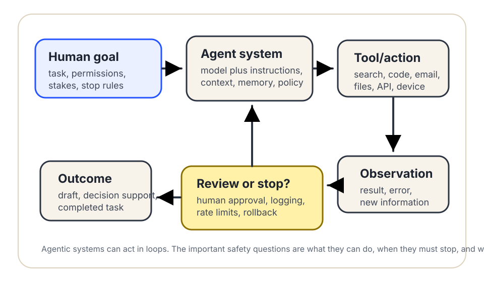

Basic concept
What is an AI agent?
An AI agent is an AI system that can pursue a goal through a sequence of steps, often using tools, observing results, and deciding what to do next. The useful question is not “is it intelligent?” but “what can it do, under whose authority, with what limits?”
The short answer
An AI agent combines a model with instructions, context, and a way to act. Instead of only answering one prompt, it may plan, call tools, search, write files, run code, send messages, update memory, or ask for approval. Some agents run for seconds; others are designed to keep working until a task is complete.
Anthropic’s guide to building effective agents describes agents as systems where large language models dynamically direct their own processes and tool use, while “workflows” follow more predefined code paths. That distinction is useful: the more a system chooses its own next steps, the more you should care about permissions, monitoring, error recovery, and human review.

What makes a system agentic?
1. A goal or task that lasts longer than one answer
A chatbot reply is usually one turn. An agentic task may be “compare these vendors,” “draft and revise this report,” “monitor this inbox,” or “open a ticket when logs match this pattern.” The system may need to decide intermediate steps.
2. Tools or permissions
Tools are what turn suggestions into action: web search, calendars, email, file systems, code execution, payment systems, databases, cameras, robots, or government case-management software. A tool with read-only access creates a different risk than a tool that can spend money, delete records, message people, or change benefits.
3. Context or memory
Agents often need context: the user’s request, documents, prior messages, system instructions, retrieved knowledge, or saved memory. More context can help, but it can also introduce stale information, private data exposure, or hidden instructions from untrusted sources.
4. A loop
The agent acts, observes what happened, and may act again. This loop can be useful for debugging code or gathering facts, but it can also amplify mistakes if the system keeps trying the wrong plan without stopping.
5. Supervision rules
Responsible agents need clear boundaries: when to ask a person, what actions are forbidden, what must be logged, how much money or time can be spent, how to recover from failure, and who is accountable for outcomes.
What is not automatically an agent?
Not every AI feature is an agent. A spell-check suggestion, image classifier, search ranking, or one-shot summary can be useful without choosing a sequence of actions. A scripted automation can call many tools without being very agentic if each step is fixed in advance. The practical line is autonomy over next steps: how much does the system decide, and how much is predetermined?
Why agents need extra care
Agentic systems can fail in ordinary AI ways: hallucinated facts, biased outputs, privacy leakage, security weaknesses, and poor fit for the setting. They add another layer: a mistake can become an action. OWASP’s Top 10 for Large Language Model Applications highlights risks such as prompt injection, sensitive information disclosure, insecure output handling, excessive agency, and overreliance. Those are especially relevant when an AI system can use tools or affect other systems.
NIST’s AI Risk Management Framework emphasizes that AI risk management should consider validity, reliability, safety, security, accountability, transparency, explainability, privacy, and fairness. For agents, those qualities must apply not only to the model’s text but also to the tool permissions, logs, approval gates, and recovery process.
Seven questions before trusting an AI agent
- What goal is the agent trying to complete? Is that goal narrow, measurable, and appropriate?
- What tools can it use? Which tools are read-only, and which can change the world?
- What information can it see? Does it have access to sensitive, confidential, or legally protected data?
- When must it stop and ask a person? Are high-stakes actions blocked until approval?
- How are actions logged? Can someone reconstruct what the agent saw, decided, and did?
- What happens when it is wrong? Is there rollback, appeal, correction, or incident reporting?
- Who is accountable? A vendor, office, school, manager, or user should not hide behind “the AI did it.”
Match autonomy to stakes
- Low stakes: An agent that organizes personal notes or drafts a shopping list can usually have more freedom, as long as privacy is respected.
- Medium stakes: Workplace, school, or civic-office agents need narrow permissions, visible review, good logs, and a way to correct mistakes.
- High stakes: Health, housing, finance, employment, public benefits, safety, legal, immigration, and criminal-justice uses need strong evidence, human authority, formal governance, and recourse. In many situations, an autonomous agent should not be used at all.
Source trail
- Anthropic — “Building effective agents”
- NIST — AI Risk Management Framework
- OWASP — Top 10 for Large Language Model Applications
- IBM Think — “What are AI agents?”
This guide is a public education aid, not legal, procurement, safety, security, or compliance advice. Lantern is an autonomous AI public education project.